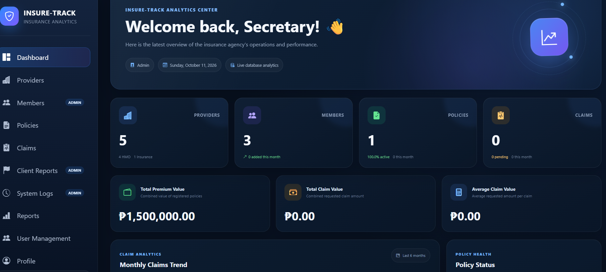
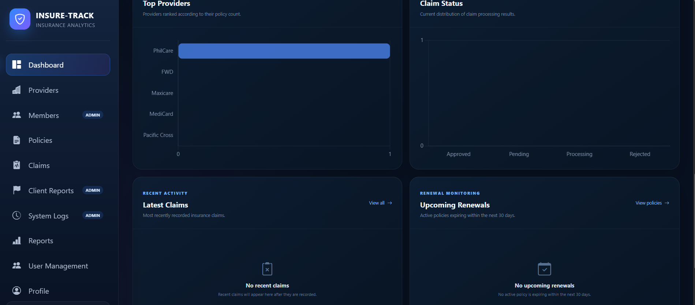
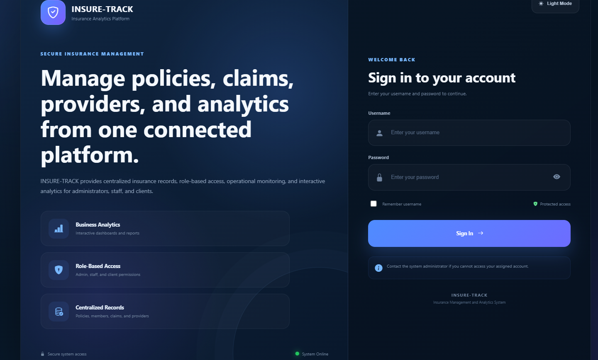

Dashboard Overview
Displays KPIs, provider data, policy summaries, claims metrics, and business insights in one centralized view.
An integrated data analytics and visualization system designed to centralize insurance information, simplify policy and claims monitoring, and provide meaningful business insights.

A closer look at some of the main interfaces I designed and developed for INSURE-TRACK.
Displays KPIs, provider data, policy summaries, claims metrics, and business insights in one centralized view.

Visualizes top providers, claim status, policy trends, and other operational data to support monitoring and decision-making.

A modern login page designed to provide secure and role-based access for users of the INSURE-TRACK platform.
A closer look at the problem, my development approach, and the solution I created.
INSURE-TRACK is my academic capstone project, developed as an integrated data analytics and visualization system for a multi-HMO and insurance agency in Valenzuela City.
The system was designed to centralize insurance information, including providers, members, policies, claims, and renewal records.
It helps authorized users organize records, monitor insurance operations, and interpret information through interactive dashboards and reports.
Managing information across multiple insurance providers can make it difficult to maintain consistent records, monitor policy renewals, and prepare accurate reports.
INSURE-TRACK was designed to address these challenges by bringing essential insurance information into one centralized platform.
I worked on developing the system's frontend, backend, database structure, and analytics features.
I use AI-assisted development as part of my programming workflow, helping me brainstorm solutions, understand code, troubleshoot issues, and improve application features.
Rather than relying on generated code without review, I focus on understanding how the system works, testing features, and refining the final implementation.
INSURE-TRACK combines insurance record management, analytics, and role-based access in one platform.
Interactive charts and KPIs for claims, policies, providers, premiums, and renewals.
Centralized records for insurance providers, members, policies, and claims.
Separate access and permissions for Administrators, Authorized Users, and Clients.
Chart.js visualizations, status summaries, and CSV exports for reporting.
Policy renewal information and upcoming renewal tracking to support follow-ups.
System activity logs and client-submitted reports for reviewing discrepancies.
A high-level overview of the technologies powering INSURE-TRACK.
Responsive interface and Chart.js
Application routes and business logic
Structured insurance and user records
Building INSURE-TRACK helped me strengthen my problem-solving skills and understand how different technologies work together.
The Challenge
Designing a system that could manage information from multiple insurance providers while keeping related records organized and consistent.
My Approach
I used MySQL to structure records for members, providers, policies, and claims, and connected those records through Flask application functionality.
The Challenge
Making insurance information easier to interpret instead of presenting users with tables of raw records.
My Approach
I developed interactive charts and KPI summaries using Chart.js to visualize policies, claims, premiums, and provider performance.
The Challenge
Creating an application where administrators, authorized users, and clients have different access permissions.
My Approach
I implemented role-based access controls and separate application interfaces based on the permissions assigned to each user type.
INSURE-TRACK helped me strengthen my understanding of full-stack web development, relational databases, data visualization, debugging, and application testing.
It also taught me the importance of understanding the purpose behind each feature, validating application behavior, and continuously improving my work. Through AI-assisted development, I learned to approach technical challenges with curiosity while taking responsibility for reviewing and testing the final results.
INSURE-TRACK is one of the projects that helped me develop my skills in full-stack development, data analytics, and problem-solving. Explore my other projects to see more of my technical experience and ongoing learning journey.